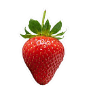
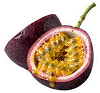
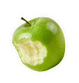
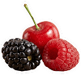

.png)
Disfruta de las mejores bebidas italianas en Cancún, ideales para refrescarte en cualquier momento. Contamos con una gran variedad de bebidas italianas preparadas con ingredientes de calidad para acompañar tus postres o pasteles.
.png)
Disfruta una deliciosa bebida italiana de fresa en Cancún, perfecta para refrescar tu día. Nuestras bebidas refrescantes están hechas con ingredientes de calidad para acompañar tus momentos especiales.

Disfruta una deliciosa bebida italiana de maracuyá en Cancún, ideal para refrescar tu día con un toque tropical. Nuestras bebidas refrescantes en Cancún están elaboradas con ingredientes de calidad para acompañar cada momento especial.
.png)

.png)
Disfruta una refrescante bebida italiana de manzana verde en Cancún, perfecta para quienes buscan un sabor fresco y diferente. Nuestras bebidas refrescantes en Cancún están preparadas con ingredientes de calidad para acompañar tus mejores momentos.

Disfruta una deliciosa bebida italiana de frutos rojos en Cancún, perfecta para quienes aman los sabores intensos y refrescantes. Nuestras bebidas refrescantes en Cancún están elaboradas con ingredientes de calidad para acompañar tus mejores momentos.
.png)
